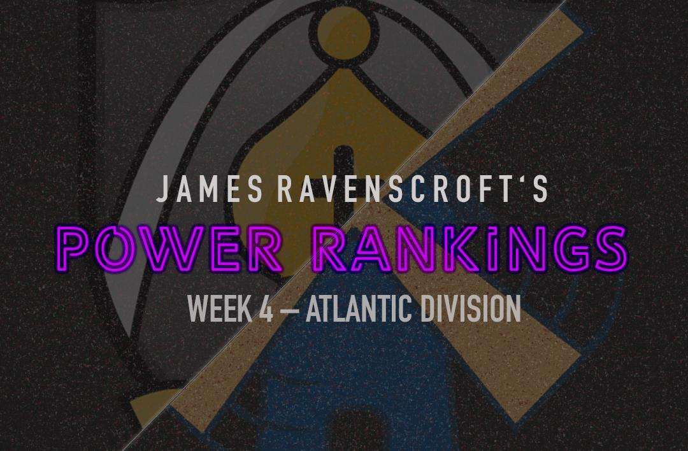

PRO Chess League Power Rankings
Week 4: Atlantic Division

Welcome to week four of the PRO Chess League power rankings. This week we had the first of three battles royales this season, and man was it exciting. We saw some teams rise to the challenge and prove their mettle, and others fail to live up to their expectations. Now we get to sit and reflect on the shakeup that occurred in the standing following it all. The bottom three teams in this division were unable to really make a jump into contention for a playoff spot, while the rest of the teams are staying very competitive in a tight playoff race. We also saw the Pacific division assert its dominance, given that out of the six lowest scoring teams (the last three place teams in each group), only one of them was in the Pacific. As we see every week in the PRO Chess League, there is great chess being played!
PRO Chess League Overview
This year, we will be doing a weekly power rankings list for teams in the Atlantic division. For those of you who don't know, the regular season of the PRO Chess League (PCL) is ten weeks long. Each week, teams will have to pick 4 players from their roster with an average standard rating (not blitz or rapid) of 2500 FIDE or less for each match. Every match consists of 16 games (aside from the Battle Royales) meaning every player plays 4 games, on rapid time control (15 minutes with a 2-second increment). At the end of the match, the winner of the match receives ten points for the win. Each will also earn as many points as points they earned in the match (i.e. If team A defeats team B 10.5-5.5, team A receives 20.5 points and team B receives 5.5 points). This means that every game matters, so even if a team has already lost, there is still reason to keep playing. If anything that I wrote was unclear, you can always see the
PRO Chess League Official Rules for further explanation. I'm looking forward to seeing the rest of the season, and hope you are too!

Want to support the Black and Gold? Be a part of the Pittsburgh Pawngrabbers' journey in 2019! Check out the Pittsburgh Pawngrabbers on Indiegogo to give your support!
1. Saint Louis Arch Bishops
(PR: 2) Points: 81
Although they do not hold the top spot in the division, they played well in the Battle Royale and are showing the most consistency in the division. There were no glaring weaknesses in scoring, despite the absence of Wesley So. Even their fourth board, Josh Bloomer, who hasn't scored that many points this year, scored 3 out of 7. This was a nice bounce-back performance following a tough loss to a good team, and I think it shows the character of this team. With So presumably back this week, there is no doubt that they are still the team to beat in the Atlantic.
2. Montreal Chessbrahs
(PR: 1) Points: 79
This was not the performance I was expecting from the Chessbrahs one week after earning the top spot in the division. Granted, they didn't field the lineup they usually go with (I assume that means the players were unavailable and not that the team decided this lineup was best), but I still expected more. They finished 6th in their group, only ahead of the Lions and the Champions, and behind every team in the Pacific. I'm not giving up on this team and I think that this performance may have been a fluke based on a lineup they probably weren't thrilled with, but still, not a great sign for them.
3. Webster Windmills
(PR: 3) Points: 85.5
For many weeks now, I was keeping Webster in one of the top 3 spots despite them not being in a playoff spot. I felt that even though they had one bad showing against Saint Louis, they were still a good team. This week, Webster stepped up to the plate big time to prove to their doubters that they are just as good as they were last year. They scored a grand total of 41.5 points this week, nearly doubling their score, and vaulting them into the top spot in the division. What stands out to me the most is the exceptional play from Aaron Grabinsky, who scored 6 out of 7. He proved that in the battle royales, the fourth board is as important, if not more so, than the first board. I'm interested to see if he can keep his hot streak going since this week he will have to play against all boards.
4. New York Marshalls
(PR: 4) Points: 72.5
I can't believe that a team with no head-to-head losses in matches this year wouldn't hold a playoff spot; however, a tied-for-sixth-place performance was certainly not what they were hoping for. Now they are on the outside looking in, even with their undefeated record. A lot of the blame falls on the shoulders of top board Anton Demchenko, who only scored one out of seven, the lowest scoring first board in his group. The Battle Royale causes a huge shakeup in the rankings because of how many points are awarded, meaning just a point or two could be a big swing in the standings. But if you look at their body of work through four weeks this season, they look like a top-four team. This week, they put their undefeated season on the line against the Arch Bishops, who are probably the most dangerous team in the league.
5. Montclair Sopranos
(PR: 5) Points: 73
The Sopranos did very well in a prove-it week to maintain a half point edge for a playoff spot. They finished fourth, which is better than most teams in the Atlantic division, thanks in part to 5 points from Lenderman. He has easily been their MVP this year, playing well week in and week out, and is a big reason why they hold that fourth spot in the Atlantic. If this team can continue to play like this throughout the season, I see no reason why they can't get in the playoffs. Things don't get any easier for the Sopranos, with a match this week against Miami, and then matches against the three top teams in the division not to mention two more Battle Royales. They need to get a big win this week so they can go into their brutal second-half stretch with momentum and confidence.
6. Pittsburgh Pawngrabbers
(PR: 8) Points: 29.5
Pittsburgh actually scored more points overall than London, but they finished 8th and London finished 7th because they were in different groups. They were also a mouse slip away from finishing in a tie for 5th place, which makes this last place finish sting even more. It's promising to see board 3 Tuan Minh Le score 5 out of 7, and going forward I think he will be an asset for the Pawngrabbers. I have to think that with all of the talent this team has, the blame should fall on the shoulders of general manager Isaac Steincamp. He needs to find a lineup that can produce points on all boards because the talent is clearly there, he just has to find a way to utilize it correctly.
7. Miami Champions
(PR: 7) Points: 26.5
Miami had the fewest points of any team in the Battle Royale this week, putting them firmly at the bottom of the rankings. Their first board put up four points, but the rest of their team didn't produce anything significant. They Have some good players, but no matter what they do, they can't seem to produce in rapid games. I honestly don't know what to say about this team anymore. Things are looking grim, and unless we see a miraculous turnaround in the second half of the season, this team will have to play their way back into this division next year.
8. London Lions
(PR: 6) Points: 33
Last week, I wrote about the very apparent gap between the top five and the bottom three in the division, and the Battle Royale only accentuated the gap. All three of the teams coming up got either 7ٰٰٰٰٰٰ or 8th. They are simply fighting to not get relegated, and so far, London is winning that battle. They hold a 3.5 point edge for the 6th spot right now, thanks to a decent performance in the Battle Royale. I know 7th isn't really good, but when the two teams you are competing with finish last, 7th is pretty good. This week, they play the Pawngrabbers in a match to try to maintain their 6th place spot.